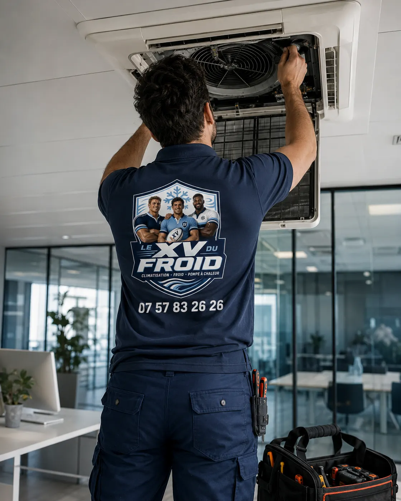
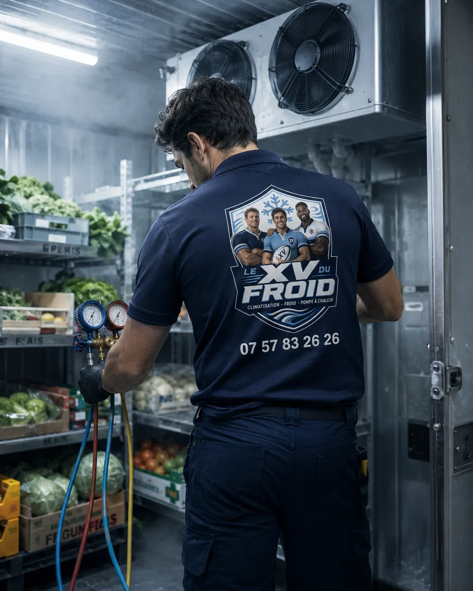

Dépannage climatisation Montigny-le-Bretonneux · 78180
Dépannage climatisation à Montigny-le-Bretonneux : quand c’est un local pro qui s’arrête.
Un bureau qui chauffe à l’heure des réunions, une boutique dont la clim goutte sur le comptoir, un cabinet où il faut garder une pièce fraîche : un dépannage pro ne se traite pas comme celui d’un salon. À Montigny-le-Bretonneux, voici ce qui change.
- Intervention pensée pour l’activité
- Cassettes, gainables, splits
- Compte rendu pour le gestionnaire

Local pro
Ce qu’on demande avant de venir.
Pour un depannage climatisation Montigny-le-Bretonneux dans un local professionnel, trois informations nous suffisent à préparer la visite : le type d’appareil (cassette au plafond, gainable, split mural, armoire), l’heure à laquelle le local est vide, et qui donne l’accès.
Ensuite, nous choisissons le moment qui gêne le moins. Un bureau se dépanne souvent tôt le matin ou en fin de journée. Un commerce, avant l’ouverture ou en dehors des heures d’affluence.
Le but : réparer sans arrêter l’activité plus que nécessaire.
Les pannes pro
Ce qu’on rencontre le plus dans les bureaux et commerces
Les appareils tournent longtemps, souvent toute la journée, et les pannes s’en ressentent.
- Cassette qui goutte : pompe de relevage ou bac encrassé, avec risque pour les dalles de faux plafond.
- Zones froides et zones chaudes : un déséquilibre sur un système gainable, souvent un clapet ou une bouche mal réglés.
- Filtre saturé : en local fréquenté, la poussière monte vite.
- Arrêts en pleine journée : protection électrique ou sécurité haute pression.
- Télécommande ou thermostat mural déréglé : les consignes changent selon les occupants.
Notre façon de faire
Un dépannage en local pro, c’est aussi de l’organisation
Avant d’ouvrir une cassette, on protège le mobilier, on balise l’espace et on prévient les occupants. Un faux plafond qu’on déclipse relâche de la poussière, il faut y penser.
Pour un gestionnaire ou un syndic de bureaux, nous remettons un compte rendu daté, utile pour l’historique de l’installation et pour un éventuel contrat de maintenance.
Quand une panne revient, nous proposons d’examiner l’installation entière plutôt que de réparer toujours la même unité.
Un compte rendu clair vaut mieux qu’un appel supplémentaire : il dit ce qui a été fait, ce qui reste à surveiller.

Les pièces qu’on embarque et celles qu’on commande
Dans le véhicule, nous gardons les pièces qui tombent le plus souvent : pompes de relevage, condensateurs, sondes, cartes courantes. Pour les marques moins répandues ou les modèles anciens, il faut parfois commander.
En local pro, nous préférons le dire dès l’appel : si la pièce n’est pas en stock, nous prévoyons une seconde visite pour limiter l’arrêt.
- Pièces courantes dans le véhicule
- Commande annoncée dès le diagnostic
- Seconde visite planifiée à l’avance
Copropriété de bureaux
Quand l’immeuble s’en mêle
Dans un immeuble de bureaux, la façade et les toitures sont des parties communes. Un groupe en terrasse ou en toiture exige parfois l’accord du gestionnaire et une autorisation d’accès.
Nous demandons le contact au moment de l’appel pour préparer l’accès : badge, ascenseur de service, horaires d’autorisation. C’est ce qui évite un déplacement à vide.
Notre avis
Un contrat de maintenance, oui ou non ?
Pour un local qui dépend de sa clim au quotidien, un passage régulier évite beaucoup de pannes. Pour un petit bureau avec un seul split, une visite par an peut suffire.
Nous ne vous proposons un contrat que quand il a du sens, après avoir vu l’installation.
Un contrat ne remplace pas un bon dépannage. Il évite surtout que les pannes se multiplient.
Questions
Dépannage clim pour un local pro à Montigny-le-Bretonneux
Intervenez-vous en dehors des heures d’ouverture ?
Nous cherchons le créneau qui gêne le moins votre activité, tôt le matin ou en fin de journée. Nous ne promettons pas d’horaire à l’avance, mais nous le disons franchement à l’appel.
Faites-vous le depannage clim Montigny-le-Bretonneux pour les cassettes de plafond ?
Oui. Les cassettes, gainables, splits muraux et armoires entrent dans nos dépannages, quelle que soit la marque.
Ma cassette goutte sur le bureau, que faire ?
Coupez l’appareil, posez un seau, protégez les ordinateurs. La cause est souvent la pompe de relevage ou un bac encrassé.
Peut-on dépanner sans couper toute la clim du bâtiment ?
Souvent oui, en isolant l’unité concernée. Nous le vérifions avec vous avant de commencer.
Un compte rendu est-il remis après l’intervention ?
Oui, par écrit : constats, pièces remplacées, observations. Il sert à votre dossier ou à celui du gestionnaire.
Dépannez-vous les appareils installés par un autre prestataire ?
Oui, quelle que soit la marque ou l’installateur d’origine, du moment qu’un accès sécurisé est possible.
Dans votre ville
Les autres services à Montigny-le-Bretonneux
Un besoin différent, une page différente : dépannage, entretien, installation ou urgence.
- Installation et dépannage climatisation Montigny-le-Bretonneux
- Entretien climatisation Montigny-le-Bretonneux : étanchéité et pressions du circuit
- Urgence climatisation Montigny-le-Bretonneux : serveur, cave et local technique
- Climatisation dans les Yvelines (78) : installation, dépannage, entretien, urgence
Autour de chez vous
Dépannage de climatisation dans les villes voisines
Si vous êtes à la limite de deux communes, lisez aussi la page d’à côté.
- Dépannage climatisation Élancourt : panne intermittente, comment la décrire au technicien
- Dépannage climatisation Guyancourt : clim qui givre, filtre, débit d’air et gaz
- Dépannage climatisation Trappes : télécommande, carte électronique et sondes
- Dépannage climatisation Vélizy-Villacoublay : groupe extérieur, ventilateur et condensateur
- Dépannage climatisation Plaisir : la clim qui s’arrête toute seule
- Dépannage climatisation Viroflay : l’unité intérieure qui goutte sur le mur
- Dépannage climatisation Rambouillet : panne après un orage ou une coupure de courant
- Dépannage climatisation Versailles : fuite d’eau et pannes courantes
- Dépannage climatisation Le Chesnay-Rocquencourt : clim de plus de dix ans, réparer ou remplacer
À côté
D’autres besoins dans les communes voisines
Chaque ville a ses pages.
Nos services
Aller plus loin sur la climatisation
Les pages du site qui complètent celle-ci : services, guides pratiques et devis.
- Dépannage climatisation en Île-de-France
- Installation de climatisation : split, gainable, monobloc
- Entretien de climatisation et de clim réversible
- Demander un devis climatisation gratuit
- Toutes nos zones d’intervention
- Climatisation en appartement : règles et solutions
- Fuite d’eau d’un climatiseur : causes et solutions
Où on intervient
Montigny-le-Bretonneux et Saint-Quentin-en-Yvelines
Le secteur de la gare, les zones d’activité, les quartiers résidentiels, ainsi que Guyancourt, Élancourt, Voisins-le-Bretonneux, Trappes et La Verrière.
Demander un dépannage pour un local proÀ lire aussi
Autour de Saint-Quentin
Pages voisines : climatisation Guyancourt, climatisation Élancourt, climatisation Trappes.
Transparence
Un devis clair avant toute intervention.
Vous savez ce qui est prévu, pourquoi c’est nécessaire et à quel tarif avant que le technicien commence. Puis contrôles et essais avant son départ.